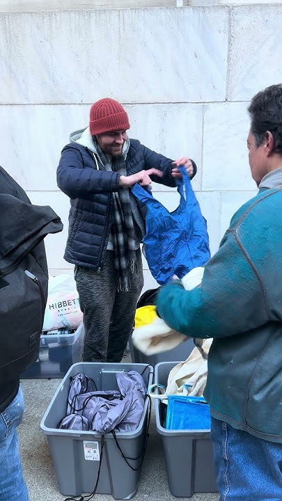

Change does not happen in a vacuum; it begins exactly where our community members are. Our outreach teams operate on the front lines, navigating the complex realities of street life to deliver essential hygiene resources and, more importantly, consistent human connection. By showing up in high-need areas with professional empathy instead of judgment, we systematically dismantle the barriers of isolation, distrust, and systemic fatigue that keep our neighbors trapped in survival mode.
Phase 1 is not merely about distributing supplies; it is about establishing a 'warm bridge' of trust that allows for genuine engagement. When we consistently meet individuals at their lowest point with reliability and respect, we restore the baseline dignity required to contemplate a different future. These interactions are the critical first step in a long-term engagement process, demonstrating to our participants that they are seen, heard, and that they possess the inherent, untapped potential to reclaim their lives.